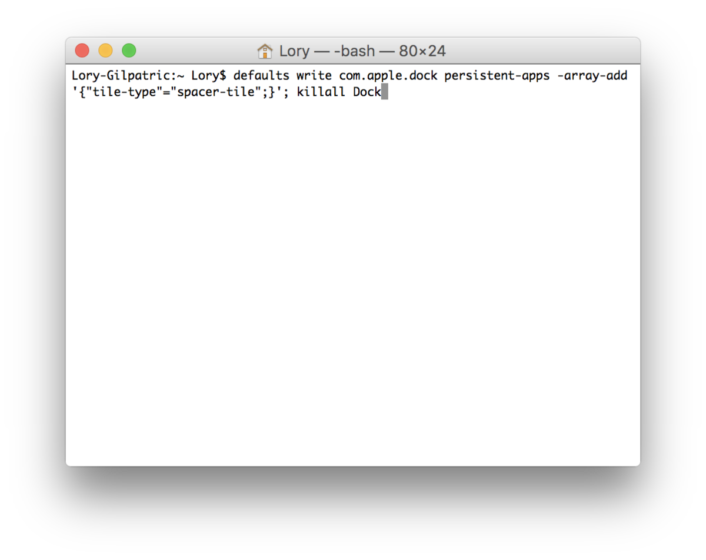
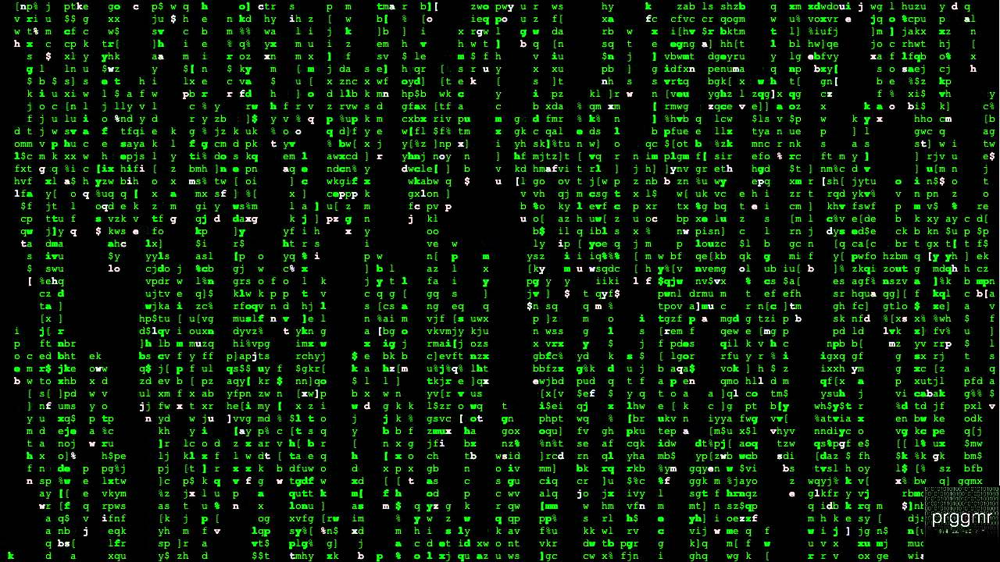

start with learning how to get in to you documents through the linx terminal.
you should frist start by finding out if you have this if not this might not be the website for you.
this is what it looks like.

ok now you know what it looks like you can start to learn some of the commands on the terminal that will help you know what to do when you use it. Here are some of the commands below.
- ls - "list." Gives a list of the contents of a folder.
- pwd - "print working directory." Shows what directory you are in.
- cd ..- "move directory" move up one directory
- cd- "move directory" lets you move to any directory that you type after it.
- mkdir- "makes a directory" you will type that in and then any word after that and that will be the name of that directory.

now that you know a little you can leran more.